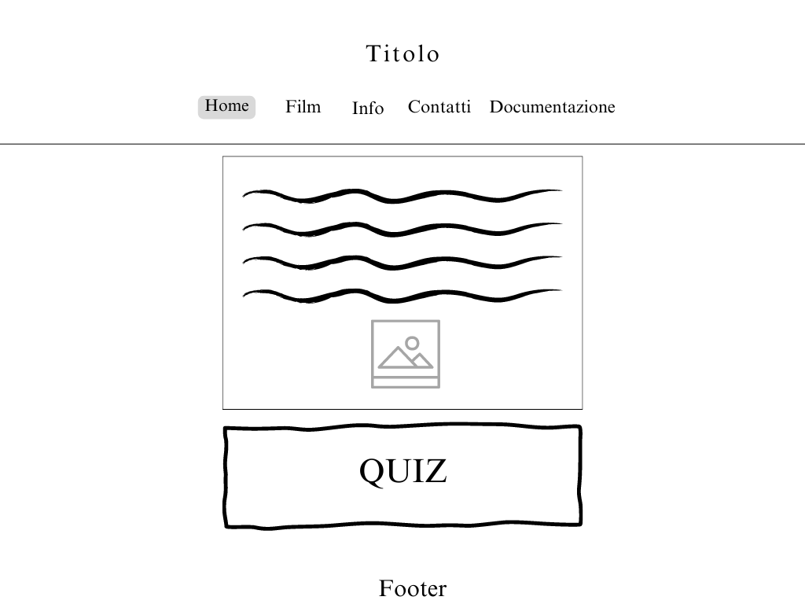

1. Benchmarking
Obiettivi: l'obiettivo del sito è quello di fornire una playlist completa della colonna sonora della saga, tentando di avvicinare soprattutto il giovane pubblico ai generi musicali più seguiti di un tempo.
Target utente: il target utente a cui questo sito è principalmente rivolto sono i seguaci della serie, decisamente molto vari, poiché possono comprendere età che vanno generalmente dai 14 ai 50 anni. Il sito web si rivolge anche a tutti gli interessati e appassionati di musica funk, pop, folk e rock.
Competitors
IMDB.com: si tratta di un sito che permette di conoscere ogni minimo dettaglio di film e serie cinematografiche, a cominciare da una breve trama e dall'aggiunta del rispettivo trailer, alle specifiche informazioni riguardanti il cast e la colonna sonora (es. da chi è stata scritta e prodotta), fino alle recensioni presentate dagli utenti. Ciò che non funziona di questo sito però, è il fatto che non si possano recuperare né gli audio né i video dei brani musicali delle colonne sonore. Inoltre, c'è poca coerenza nella scelta della lingua, dal momento che i titoli di ciascuna sezione sono scritti in inglese, e le relative didascalie appaiono in italiano.
Soundtrack.net: consiste in una pagina web che fornisce le schede complete delle canzoni adottate nella produzione di film e serie cinematografiche (specificando da chi sono state scritte e prodotte), dando inoltre l'opportunità di ascoltarle, ma senza visualizzarne i video. Inoltre, così come per IMDB.com, ciò che manca in questo sito è il fatto di non poter sentire per ogni opera cinematografica i brani musicali corrispondenti. Per alcune di queste infatti, vengono solo elencati i titoli delle melodie senza l'aggiunta del bottone da premere per ascoltarle.
Twilight Melodies rappresenta invece un sito web completo ed esauriente, dal momento che fornisce ai propri utenti sia le playlist per ascoltare gli audio, che i link per visualizzare i video, di ciascuna melodia della colonna sonora. Ma non solo, poiché costituisce anche un evidente esempio di coerenza nell'adozione di un'unica lingua per il sito (in questo caso l'italiano). Inoltre, ciò che la pagina web offre di più rispetto agli altri siti, è sia la possibilità di svolgere un piccolo quiz per verificare la padronanza dei contenuti della serie, sia l'opportunità di disporre di tutte le melodie della saga, suddivise per film e non raggruppate in un'unica playlist, organizzate in ordine alfabetico per facilitare gli utenti nella ricerca delle canzoni.
2. Struttura e layout
Architettura del sito:
Wireframe:
Home

Film
Info
Contatti
Documentazione
Look and feel
Font: il carattere che ho deciso di adottare per una buona riuscita del sito è il Twilight New Moon, appositamente creato per i titoli dei film e dei libri della saga, e che nel mio sito ho deciso di utilizzare per le intestazioni, il menù di navigazione e il footer. L'IM Fell Great Primer è invece il carattere che ho utilizzato per il testo presente nelle sezioni e nei vari paragrafi.
Colori: per la creazione della mia pagina web ho scelto di utilizzare come colori prevalenti il grigio scuro [rgb (51, 47, 46) ], adottato per le intestazioni, il menù di navigazione, il footer, e lo sfondo delle sezioni (anche se sfumato), e il colore grigio chiaro [rgb (204, 198, 202) ], adottato invece per le parti di testo. Più nello specifico, sono stati scelti questi due colori per richiamare le tonalità presenti nell'immagine di sfondo. Oltre al colore grigio, è stato utilizzato il colore bianco [rgb (253, 253, 253)] per il contorno dei titoli presenti nel menù di navigazione.
3. Linguaggi e strumenti
Linguaggi: HTML e CSS.
Strumenti: Visual Studio Code (per editare il sito), Fontawesome (per le icone), Google Fonts (per il carattere del testo), Adobe Color (per i colori), Canva (per disegnare l'architettura del sito e il wireframe), Google Analytics (per visualizzare il numero di utenti e le visite sul sito web), Github (per la pubblicazione del sito), Spotify (per ascoltare le colonne sonore), Wikipedia (per acquisire le informazioni sulle colonne sonore), Picsart (per modificare l'immagine di sfondo della homepage), Pixabay (per l'immagine di sfondo di tutte le pagine) e Flickr (per l'immagine presente nella homepage e le immagini di copertina delle playlist di Spotify). Sia le immagini prese da Pixabay che le immagini prese da Flickr hanno la Licenza Creative Commons.
Communication Strategy
1. Background
Fin dalle prime volte in cui ho guardato piacevolmente questa serie, sono rimasta particolarmente incuriosita dalla colonna sonora utilizzata, interesse che mi ha spinto ben presto a ricercare e scoprire ogni singola melodia. Per questo motivo, tale sito nasce dall'idea di offrire ai seguaci della saga un modello completo dei brani musicali adottati nella rispettiva realizzazione, da poter consultare in qualsiasi momento.
2. Obiettivi comunicativi
L'obiettivo di questo progetto è stato divulgare e far conoscere il più a fondo possibile i brani musicali presenti nella serie cinematografica di Twilight, provando inoltre a suscitare curiosità nella riscoperta di generi musicali ad oggi inascoltati dalle giovani generazioni. L'obiettivo prefissato è stato invece il raggiungimento di 100 visualizzazioni della pagina web e di ben 40 like al post su Instagram della pagina ufficiale.
3. Target, audience e messaggio
Il target a cui questo sito si rivolge primariamente, sono i fan della saga, appartenenti alla fascia di età compresa tra i 14 e i 50 anni. Questo target è inoltre principalmente raggiungibile tramite il social network Instagram (in particolar modo gli under 35) e il social network Facebook (specialmente per la fascia di età che va dai 35 ai 50 anni). È importante però ricordare che la pagina web in questione è indirizzata anche ai seguaci della musica funk, pop, folk e rock.
4. Promozione
Il sito web verrà promosso attraverso la creazione di una pagina Instagram interamente dedicata, che verrà sponsorizzata dal mio profilo personale dove verranno pubblicate varie storie per favorirne la condivisione. Inoltre, la promozione avverrà tramite la condivisione del link del sito web sulle chat individuali e di gruppo di WhatsApp.
5. Valutazione dei risultati
Gli obiettivi sono stati decisamente raggiunti, poiché attraverso la condivisione del link del sito web sui social network Instagram e WhatsApp, sono riuscita ad avere più like e visualizzazioni del dovuto.
Visite al sito:
Sponsorizzazione:

Like ai post su Instagram:

Commenti: